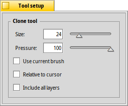

The Clone tool - D
 |
With this tool, you can copy parts of an image. You can either set the of your stamp or opt to with the currently configured tip in the Brushes window. controls how firmly the stamp touches the canvas; the lighter the touch, the more transparent the stamp. You start by right-clicking into the canvas to set the source area that gets cloned. It gets marked with crosshairs of the size of the stamp. Now you paint with the left mouse button, to clone the marked area. or the clone action is limited to the current layer. The quick key to choose the clone tool is D. |
Back: The Color Picker tool